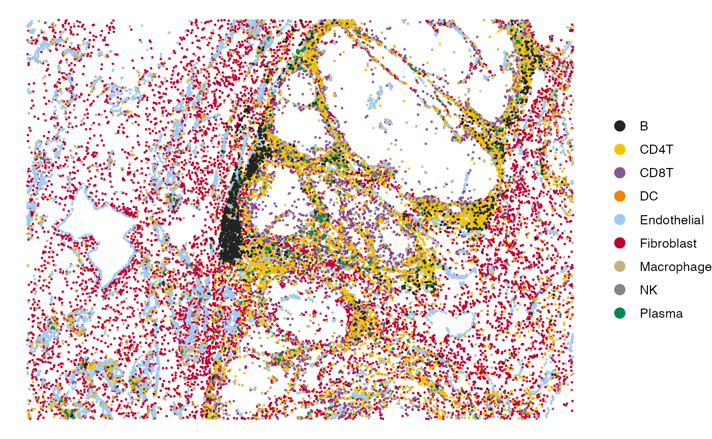
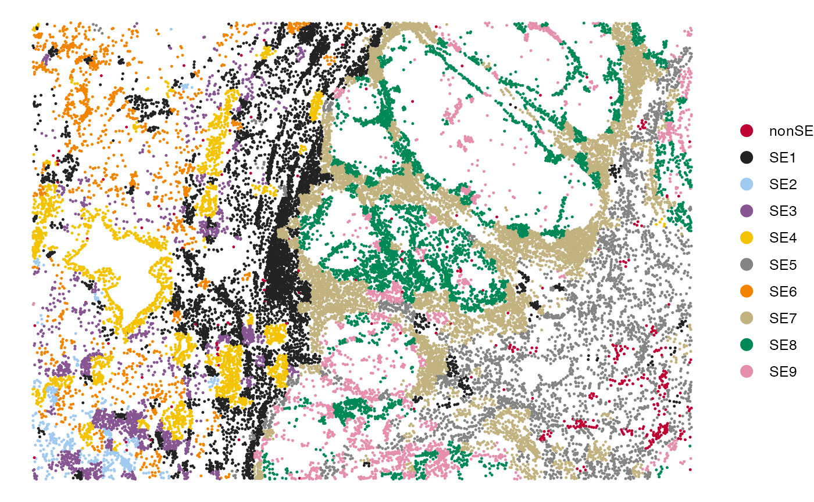
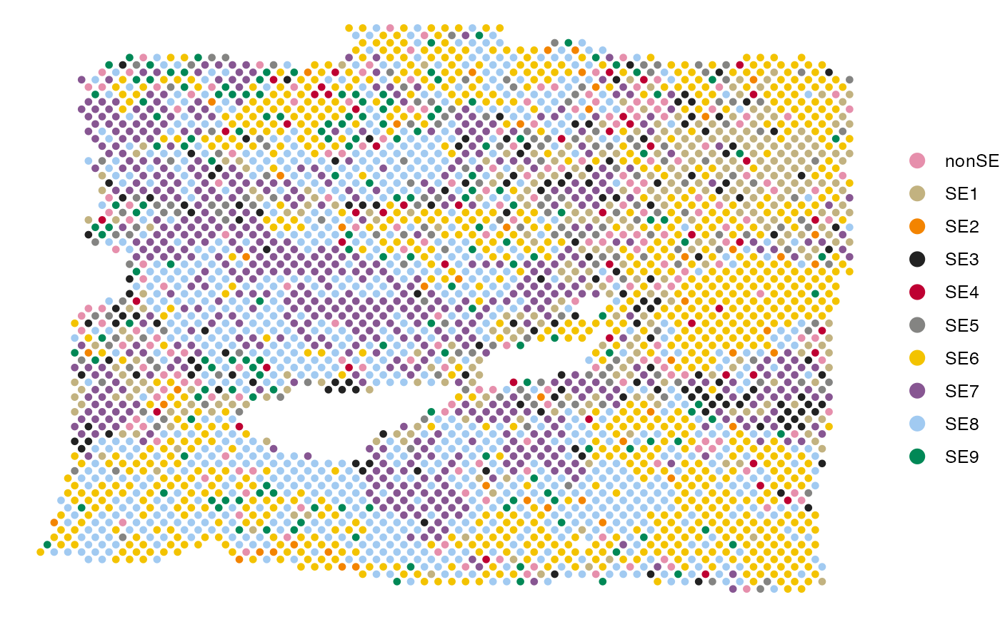

Recovery of Spatial Ecotypes from Spatial Transcriptomics Data
Source:vignettes/Recovery_Spatial.Rmd
Recovery_Spatial.RmdFirst load required packages for this vignette
suppressPackageStartupMessages(library(dplyr))
suppressPackageStartupMessages(library(ggplot2))
suppressPackageStartupMessages(library(Seurat))
suppressPackageStartupMessages(library(data.table))
suppressPackageStartupMessages(library(googledrive))
library(SpatialEcoTyper)SE recovery from single-cell spatial data
In this tutorial, we will demonstrate how to recover spatial ecotypes (SEs) from single-cell spatial transcriptomics data profiled by platforms such as MERSCOPE, CosMx SMI, or Xenium.
Loading data
We will use a subset of a melanoma MERSCOPE sample to illustrate the SE recovery process. The expression data and single-cell metadata can be downloaded from the Google Drive.
First, download the demo data from Google Drive
drive_deauth() # Disable Google sign-in requirement
drive_download(as_id("13Rc5Rsu8jbnEYYfUse-xQ7ges51LcI7n"), "HumanMelanomaPatient1_subset_counts.tsv.gz", overwrite = TRUE)
drive_download(as_id("12xcZNhpT-xbhcG8kX1QAdTeM9TKeFAUW"), "HumanMelanomaPatient1_subset_scmeta.tsv", overwrite = TRUE)Then load the gene expression matrix and meta data into R.
# Load single-cell gene expression matrix. Rows are genes, columns are cells.
scdata <- fread("HumanMelanomaPatient1_subset_counts.tsv.gz",
sep = "\t",header = TRUE, data.table = FALSE)
rownames(scdata) <- scdata[, 1]
scdata <- as.matrix(scdata[, -1])
head(scdata[, 1:5])## HumanMelanomaPatient1__cell_3655 HumanMelanomaPatient1__cell_3657
## PDK4 0 1
## TNFRSF17 0 0
## ICAM3 0 0
## FAP 1 0
## GZMB 0 0
## TSC2 0 0
## HumanMelanomaPatient1__cell_3658 HumanMelanomaPatient1__cell_3660
## PDK4 1 0
## TNFRSF17 0 0
## ICAM3 0 0
## FAP 0 0
## GZMB 0 0
## TSC2 0 0
## HumanMelanomaPatient1__cell_3661
## PDK4 0
## TNFRSF17 0
## ICAM3 0
## FAP 0
## GZMB 0
## TSC2 0
# Load single-cell metadata, with at least three columns, including X, Y, and CellType
scmeta <- read.table("HumanMelanomaPatient1_subset_scmeta.tsv",
sep = "\t",header = TRUE, row.names = 1)
scdata = scdata[, match(rownames(scmeta), colnames(scdata))]
head(scmeta[, c("X", "Y", "CellType")])## X Y CellType
## HumanMelanomaPatient1__cell_3655 1894.706 -6367.766 Fibroblast
## HumanMelanomaPatient1__cell_3657 1942.480 -6369.602 Fibroblast
## HumanMelanomaPatient1__cell_3658 1963.007 -6374.026 Fibroblast
## HumanMelanomaPatient1__cell_3660 1981.600 -6372.266 Fibroblast
## HumanMelanomaPatient1__cell_3661 1742.939 -6374.851 Fibroblast
## HumanMelanomaPatient1__cell_3663 1921.683 -6383.309 FibroblastData normalization
The gene expression data should be normalized for the SE recovery. The data can be normalized using SCTransform or NormalizeData.
Here, we are normalizing using SCTransform normalization. We recommend to install the glmGamPoi package for faster computation.
if(!"glmGamPoi" %in% installed.packages()){
BiocManager::install("glmGamPoi")
}
tmpobj <- CreateSeuratObject(scdata) %>%
SCTransform(clip.range = c(-10, 10), verbose = FALSE)
seurat_version = as.integer(gsub("\\..*", "", as.character(packageVersion("SeuratObject"))))
if(seurat_version<5){
normdata <- GetAssayData(tmpobj, "data")
}else{
normdata <- tmpobj[["SCT"]]$data
}NormalizeData for the normalization
normdata <- NormalizeData(scdata)Preview of the sample
This example sample includes nine major cell types, including B cells, CD4+ T cells, CD8+ T cells, NK cells, plasma cells, macrophages, dendritic cells (DC), fibroblasts, and endothelial cells.
# Visualize the cell type annotations in the tissue
SpatialView(scmeta, by = "CellType") +
scale_color_manual(values = pals::kelly()[-1])
In this example sample, we annotated four regions, including tumor, inner margin, outer margin, and stroma. The tumor and stroma regions were annotated based on a density of cancer cells. The inner margin and outer margin were annotated as a certain width (250 μm) inside and outside the tumor regions.
# Visualize the regions in the tissue
SpatialView(scmeta, by = "Region") + scale_color_brewer(type = "qual", palette = "Set1")
SE recovery
The RecoverSE function will be used to assign single
cells into SEs. Users can either use the default models to recover
predefined SEs or use custom models to recover newly defined SEs.
Note: To recover SEs from single-cell data, you must
specify either celltypes or se_results in the
RecoverSE function. If neither is provided, it will assume
that the input data represents spot-level spatial transcriptomics, and
SE abundances will be inferred directly from each spot.
The default NMF models were trained on discovery MERSCOPE data, encompassing five cancer types: melanoma, and four carcinomas. These models are tailored to nine distinct cell types: B cells, CD4+ T cells, CD8+ T cells, NK cells, plasma cells, macrophages, dendritic cells, fibroblasts, and endothelial cells. Each model facilitates the recovery of SEs from single-cell datasets, allowing for cell-type-specific SE analysis. Thus, for SE recovery using default models, the cells in the query data should be grouped into one of “B”, “CD4T”, “CD8T”, “NK”, “Plasma”, “Macrophage”, “DC”, “Fibroblast”, and “Endothelial”, case sensitive. All the other cell types will be considered non-SE compartments.
Using default models (1)
Before SE recovery, we recommend to perform
SpatialEcoTyper analysis, which integrate gene expression
and spatial information to learn a unified embedding of spatial
microregions. The resulting embedding will help refine the SE recovery
results. The detailed tutorial for SpatialEcoTyper analysis is available
at Discovery of Spatial Ecotypes from a
Single-cell Spatial Dataset.
## Group cells into spatial clusters with a high resolution
## This step takes ~2 min to finish
emb = SpatialEcoTyper(normdata, scmeta, resolution = 10)
class(emb)## [1] "list"
emb$obj ## A seurat object including the spatial embedding## An object of class Seurat
## 1633 features across 1633 samples within 1 assay
## Active assay: RNA (1633 features, 1633 variable features)
## 2 dimensional reductions calculated: pca, umap## X Y CellType SE
## HumanMelanomaPatient1__cell_3655 1894.706 -6367.766 Fibroblast <NA>
## HumanMelanomaPatient1__cell_3657 1942.480 -6369.602 Fibroblast SE9
## HumanMelanomaPatient1__cell_3658 1963.007 -6374.026 Fibroblast SE9
## HumanMelanomaPatient1__cell_3660 1981.600 -6372.266 Fibroblast SE9
## HumanMelanomaPatient1__cell_3661 1742.939 -6374.851 Fibroblast SE46
## HumanMelanomaPatient1__cell_3663 1921.683 -6383.309 Fibroblast <NA>## [1] "Fibroblast" "Endothelial" "DC" "Macrophage" "CD8T"
## [6] "CD4T" "Plasma" "NK" "B"Then specify the se_results in the
RecoverSE function for SE recovery.
## HumanMelanomaPatient1__cell_3655 HumanMelanomaPatient1__cell_3657
## "NonSE" "SE11"
## HumanMelanomaPatient1__cell_3658 HumanMelanomaPatient1__cell_3660
## "SE11" "SE11"
## HumanMelanomaPatient1__cell_3661 HumanMelanomaPatient1__cell_3663
## "SE01" "NonSE"Using default models (2)
You can also recover the SEs without using spatial embedding, which could be less accurate due to the lack of spatial information. The cell type annotations are required in this case. Cells should be grouped into one of “B”, “CD4T”, “CD8T”, “NK”, “Plasma”, “Macrophage”, “DC”, “Fibroblast”, and “Endothelial”, case sensitive. All the other cell types will be considered non-SE compartments.
Using custom models
To use custom models, users should first develop recovery models following the tutorial Development of SE Recovery Models. The resulting models can be used for SE recovery. An example model is available at SE_Recovery_W_list.rds.
# Download SE recovery model
drive_download(as_id("1DJbiPeAHm7-4hSIouaeMMyPBWJUyusK9"), "SE_Recovery_W_list.rds")
Ws <- readRDS("SE_Recovery_W_list.rds")Using custom models by specifying the Ws argument:
Visualization of SEs in the tissue
## Add the recovery result into the meta data
scmeta$RecoveredSE <- sepreds[rownames(scmeta)]
## Visualize the SE recovery results
SpatialView(scmeta, by = "RecoveredSE")
Recovery of spatial ecotypes from Visium Spatial Gene Expression data
SEs can be recovered from Visium spatial transcriptomics data by inferring SE abundances from each spot. Each spot can then be assigned to the SE with the highest inferred abundance, allowing for the spatial mapping of SEs across the tissue.
Loading data
In this tutorial, we will demonstrate how to recover SEs using a breast cancer sample. The expression data can be accessed from: V1_Breast_Cancer_Block_A_Section_1_filtered_feature_bc_matrix.h5, which was downloaded from https://www.10xgenomics.com/datasets.
First, download the data from Google Drive
drive_download(as_id("15D9LgvZmCZUfsL62cD67JMf8Jcq_UyuB"), "V1_Breast_Cancer_Block_A_Section_1_filtered_feature_bc_matrix.h5")
drive_download(as_id("15NTZc1HrW_gLS_pmi1ckYLw30kNarf4w"), "V1_Breast_Cancer_Block_A_Section_1_tissue_positions_list.csv")
## This download should be done within 1 min.Load the expression data into R using the Read10X_h5
function from the Seurat package.
if(!"hdf5r" %in% installed.packages()) BiocManager::install("hdf5r")
require("hdf5r")
# Load Visium gene expression matrix. Rows are genes, columns are spots.
dat <- Read10X_h5("V1_Breast_Cancer_Block_A_Section_1_filtered_feature_bc_matrix.h5")
meta <- read.csv("V1_Breast_Cancer_Block_A_Section_1_tissue_positions_list.csv",
header = FALSE, row.names = 1)
colnames(meta) <- c("tissue", "row", "col", "imagerow", "imagecol")
meta <- meta[colnames(dat), ]
head(meta)## tissue row col imagerow imagecol
## AAACAAGTATCTCCCA-1 1 50 102 15632 17782
## AAACACCAATAACTGC-1 1 59 19 17734 6447
## AAACAGAGCGACTCCT-1 1 14 94 7079 16716
## AAACAGGGTCTATATT-1 1 47 13 14882 5637
## AAACAGTGTTCCTGGG-1 1 73 43 21069 9712
## AAACATTTCCCGGATT-1 1 61 97 18242 17091Data normalization
Here, we normalize the Visium data using NormalizeData.
normdata <- NormalizeData(dat)SE recovery
If neither celltypes nor se_results are
specified, the RecoverSE function will assume the input
data is a gene-by-spot gene expression matrix. In this case, the
function will infer SE abundances across spots. Users have the option to
either use the default models to recover predefined SEs or apply custom
models to recover newly defined SEs.
Using default models
## SE01 SE02 SE03 SE04
## AAACAAGTATCTCCCA-1 2.127701e-04 6.877800e-05 3.979458e-01 8.534547e-02
## AAACACCAATAACTGC-1 1.321616e-01 6.347672e-02 4.580604e-02 9.893653e-02
## AAACAGAGCGACTCCT-1 1.658118e-01 2.438595e-15 1.257332e-01 1.021615e-01
## AAACAGGGTCTATATT-1 6.495088e-02 1.975689e-16 2.208619e-01 6.972421e-10
## AAACAGTGTTCCTGGG-1 9.104830e-02 2.073793e-01 2.579438e-09 6.489594e-02
## AAACATTTCCCGGATT-1 6.684999e-13 2.987802e-01 2.908525e-08 7.202254e-07
## SE05 SE06 SE07 SE08
## AAACAAGTATCTCCCA-1 1.162860e-01 1.055567e-05 1.723712e-16 3.026670e-01
## AAACACCAATAACTGC-1 4.542600e-07 5.479484e-02 4.511416e-01 3.746409e-16
## AAACAGAGCGACTCCT-1 7.829883e-03 1.888903e-01 3.928577e-05 3.462729e-01
## AAACAGGGTCTATATT-1 8.604433e-03 2.053562e-11 1.976922e-16 7.055828e-01
## AAACAGTGTTCCTGGG-1 1.529680e-06 2.046686e-02 2.947065e-01 2.356171e-15
## AAACATTTCCCGGATT-1 1.993179e-11 2.597762e-08 1.996192e-01 3.022784e-16
## SE09 SE10 SE11
## AAACAAGTATCTCCCA-1 5.912467e-02 2.078080e-02 1.755819e-02
## AAACACCAATAACTGC-1 1.616557e-02 1.333849e-01 4.131729e-03
## AAACAGAGCGACTCCT-1 4.615261e-02 2.635185e-04 1.684507e-02
## AAACAGGGTCTATATT-1 9.278320e-15 1.739479e-09 1.975689e-16
## AAACAGTGTTCCTGGG-1 1.582161e-01 1.632831e-01 2.351639e-06
## AAACATTTCCCGGATT-1 1.697931e-01 2.576151e-01 7.419167e-02
## This step would take ~3 minutes to completeUsing custom models
To use custom models, users should first develop recovery models following the tutorial Developing SE Recovery Models. The resulting models can be used for SE recovery.
An example model is available at SE_Recovery_W_list.rds.
By specifying the Ws parameter (a list of
cell-type-specific W matrices) in the RecoverSE function,
the custom models will be used for recovering SEs.
# Download SE recovery model
drive_download(as_id("1DJbiPeAHm7-4hSIouaeMMyPBWJUyusK9"), "SE_Recovery_W_list.rds", overwrite = TRUE)
Ws <- readRDS("SE_Recovery_W_list.rds")
## Using custom models by specifying the Ws argument
preds <- RecoverSE(normdata, Ws = Ws)
## This step would take ~3 minutes to completeVisualization of SEs in the tissue
Each spot can be assigned to the SE with the highest inferred
abundance, and the spatial mapping of SEs can be visualized using the
SpatialView function.
meta$RecoveredSE = colnames(preds)[apply(preds, 1, which.max)]
meta$Y = -meta$row
SpatialView(meta, by = "RecoveredSE", X = "col", Y = "Y", pt.size = 2)
Session info
The session info can be invaluable for users who encounter issues, as it allows them to replicate the exact environment and identify potential discrepancies in package versions or configurations that might be causing problems.
## R version 4.2.0 (2022-04-22)
## Platform: x86_64-apple-darwin17.0 (64-bit)
## Running under: macOS Big Sur/Monterey 10.16
##
## Matrix products: default
## BLAS: /Library/Frameworks/R.framework/Versions/4.2/Resources/lib/libRblas.0.dylib
## LAPACK: /Library/Frameworks/R.framework/Versions/4.2/Resources/lib/libRlapack.dylib
##
## locale:
## [1] en_US.UTF-8/en_US.UTF-8/en_US.UTF-8/C/en_US.UTF-8/en_US.UTF-8
##
## attached base packages:
## [1] parallel stats graphics grDevices utils datasets methods
## [8] base
##
## other attached packages:
## [1] hdf5r_1.3.8 SpatialEcoTyper_0.0.4 NMF_0.27
## [4] Biobase_2.56.0 BiocGenerics_0.42.0 cluster_2.1.4
## [7] rngtools_1.5.2 registry_0.5-1 RANN_2.6.1
## [10] Matrix_1.5-3 googledrive_2.1.1 data.table_1.14.6
## [13] SeuratObject_4.1.3 Seurat_4.3.0 ggplot2_3.4.0
## [16] dplyr_1.1.0
##
## loaded via a namespace (and not attached):
## [1] circlize_0.4.15 systemfonts_1.0.4 plyr_1.8.8
## [4] igraph_1.3.5 lazyeval_0.2.2 sp_1.6-0
## [7] splines_4.2.0 listenv_0.9.0 scattermore_0.8
## [10] gridBase_0.4-7 digest_0.6.31 foreach_1.5.2
## [13] htmltools_0.5.8.1 fansi_1.0.4 magrittr_2.0.3
## [16] memoise_2.0.1 tensor_1.5 doParallel_1.0.17
## [19] ROCR_1.0-11 ComplexHeatmap_2.12.1 globals_0.16.2
## [22] matrixStats_0.63.0 R.utils_2.12.2 pkgdown_2.0.9
## [25] spatstat.sparse_3.0-0 colorspace_2.1-0 ggrepel_0.9.2
## [28] textshaping_0.3.7 xfun_0.37 crayon_1.5.2
## [31] jsonlite_1.8.4 progressr_0.13.0 spatstat.data_3.0-0
## [34] survival_3.5-0 zoo_1.8-11 iterators_1.0.14
## [37] glue_1.6.2 polyclip_1.10-4 pals_1.7
## [40] gtable_0.3.1 gargle_1.5.1 leiden_0.4.3
## [43] GetoptLong_1.0.5 shape_1.4.6 future.apply_1.10.0
## [46] maps_3.4.1 abind_1.4-5 scales_1.2.1
## [49] DBI_1.1.3 spatstat.random_3.1-3 miniUI_0.1.1.1
## [52] Rcpp_1.0.10 viridisLite_0.4.1 xtable_1.8-4
## [55] clue_0.3-64 reticulate_1.28 bit_4.0.5
## [58] mapproj_1.2.11 stats4_4.2.0 htmlwidgets_1.6.1
## [61] httr_1.4.7 RColorBrewer_1.1-3 ellipsis_0.3.2
## [64] ica_1.0-3 farver_2.1.1 R.methodsS3_1.8.2
## [67] pkgconfig_2.0.3 sass_0.4.9 uwot_0.1.14
## [70] deldir_1.0-6 utf8_1.2.3 labeling_0.4.2
## [73] tidyselect_1.2.0 rlang_1.1.1 reshape2_1.4.4
## [76] later_1.3.0 munsell_0.5.0 tools_4.2.0
## [79] cachem_1.0.6 cli_3.6.2 generics_0.1.3
## [82] ggridges_0.5.4 evaluate_0.20 stringr_1.5.0
## [85] fastmap_1.1.1 yaml_2.3.7 ragg_1.3.0
## [88] goftest_1.2-3 bit64_4.0.5 knitr_1.42
## [91] fs_1.6.0 fitdistrplus_1.1-8 purrr_1.0.1
## [94] pbapply_1.7-0 future_1.30.0 nlme_3.1-157
## [97] mime_0.12 R.oo_1.25.0 compiler_4.2.0
## [100] rstudioapi_0.14 plotly_4.10.1 curl_5.2.1
## [103] png_0.1-8 spatstat.utils_3.0-1 tibble_3.1.8
## [106] bslib_0.7.0 stringi_1.7.12 highr_0.10
## [109] desc_1.4.2 lattice_0.20-45 vctrs_0.6.5
## [112] pillar_1.9.0 lifecycle_1.0.3 GlobalOptions_0.1.2
## [115] spatstat.geom_3.0-6 lmtest_0.9-40 jquerylib_0.1.4
## [118] RcppAnnoy_0.0.20 cowplot_1.1.1 irlba_2.3.5.1
## [121] httpuv_1.6.8 patchwork_1.1.2 R6_2.5.1
## [124] promises_1.2.0.1 KernSmooth_2.23-20 gridExtra_2.3
## [127] IRanges_2.30.1 parallelly_1.34.0 codetools_0.2-18
## [130] dichromat_2.0-0.1 MASS_7.3-58.2 rjson_0.2.21
## [133] rprojroot_2.0.3 withr_2.5.0 sctransform_0.3.5
## [136] S4Vectors_0.34.0 grid_4.2.0 tidyr_1.3.0
## [139] rmarkdown_2.20 Rtsne_0.16 spatstat.explore_3.0-6
## [142] shiny_1.7.4